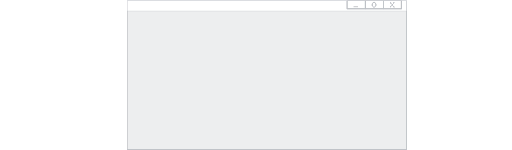
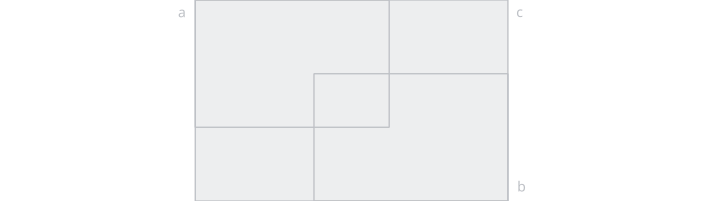
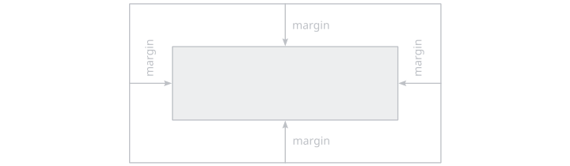
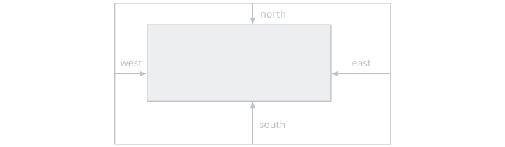
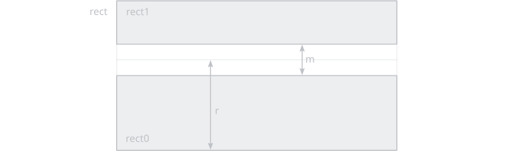

ui/rect
Procedures for manipulating rectangles for UI purposes.
screen
ui_rect_screen :: proc() -> Rect
Creates a rect that covers the entire window.
hovered
ui_rect_hovered :: proc(
rect: Rect) -> boolChecks if the rect is hovered by the cursor.
sect
ui_rect_sect :: proc(
rect0: Rect,
rect1: Rect) -> (rect2: Rect)Creates a rect at the intersection of two rects.
union
ui_rect_union :: proc(
rect0: Rect,
rect1: Rect) -> (rect2: Rect)
Creates a rect at the union of two rects.
lerp
ui_rect_lerp :: proc(
rect: Rect,
t: [2]f32) -> (p: [2]f32)Interpolate between the bottom-left corner and the top-right corner of a rect.
lerp_centered
ui_rect_lerp_centered :: proc(
rect: Rect,
t: [2]f32) -> (p: [2]f32)Interpolate between the center and the top-right corner of a rect.
unlerp
ui_rect_unlerp :: proc(
rect: Rect,
p: [2]f32) -> (t: [2]f32)Inverse-interpolate between the bottom-left corner and the top-right corner of a rect.
unlerp_centered
ui_rect_unlerp_centered :: proc(
rect: Rect,
p: [2]f32) -> (t: [2]f32)Inverse-interpolate between the center and the top-right corner of a rect.
fit
ui_rect_fit :: proc(
rect: Rect,
size: [2]f32,
fit: UI_Fit) -> (result: Rect).None
.None does nothing.
.Fill
.Fill sets the size to the size of rect.
.Cover
.Cover preserves the aspect ratio while using the smallest possible size that fully covers rect.
.Contain
.Contain preserves the aspect ratio while using the largest possible size that fully fits inside rect.
embed
ui_rect_embed :: proc(
rect: Rect,
size: [2]f32,
pivot: bit_set[Compass] = {}) -> (result: Rect)Place a rect of a certain size inside rect, embedded in a corner or at the center of an egde or at the center of rect.
margins
ui_rect_margins :: proc(
rect: Rect,
margin: Interval) -> (result: Rect)ui_rect_margins :: proc(
rect: Rect,
margin: Ratio) -> (result: Rect) {
Adds margins of margin on all sides. Inverse of extend.
margins_variate
ui_rect_margins_variate :: proc(
rect: Rect,
west: Ratio = 0,
east: Ratio = 0,
south: Ratio = 0,
north: Ratio = 0) -> (result: Rect)ui_rect_margins_variate :: proc(
rect: Rect,
west: Interval = 0,
east: Interval = 0,
south: Interval = 0,
north: Interval = 0) -> (result: Rect)
Adds variate margins. Inverse of extend_variate.
extend
ui_rect_extend :: proc(
rect: Rect,
extent: Interval) -> (result: Rect)ui_rect_extend :: proc(
rect: Rect,
extent: Ratio) -> (result: Rect)Extend the rect by extent on all sides. Inverse of margins.
extend_variate
ui_rect_extend_variate :: proc(
rect: Rect,
west: Ratio = 0,
east: Ratio = 0,
south: Ratio = 0,
north: Ratio = 0) -> (result: Rect)ui_rect_extend_variate :: proc(
rect: Rect,
west: Interval = 0,
east: Interval = 0,
south: Interval = 0,
north: Interval = 0) -> (result: Rect)Extend the rect by a different amount on each side. Inverse of margins_variate.
split_h
ui_rect_split_h :: proc(
rect: Rect,
ratio: Ratio,
margin: Ratio) -> (rect0: Rect, rect1: Rect)ui_rect_split_h :: proc(
rect: Rect,
ratio: Ratio,
margin: Interval) -> (rect0: Rect, rect1: Rect)ui_rect_split_h :: proc(
rect: Rect,
s: Interval,
margin: Ratio) -> (rect0: Rect, rect1: Rect)ui_rect_split_h :: proc(
rect: Rect,
s: Interval,
margin: Interval) -> (rect0: Rect, rect1: Rect)Splits a rect horizontally at s and leave a margin of m at the splitting line.
split_v
ui_rect_split_v :: proc(
rect: Rect,
ratio: Ratio,
margin: Ratio) -> (rect0: Rect, rect1: Rect)ui_rect_split_v :: proc(
rect: Rect,
ratio: Ratio,
margin: Interval) -> (rect0: Rect, rect1: Rect)ui_rect_split_v :: proc(
rect: Rect,
s: Interval,
margin: Ratio) -> (rect0: Rect, rect1: Rect)ui_rect_split_v :: proc(
rect: Rect,
s: Interval,
margin: Interval) -> (rect0: Rect, rect1: Rect)
Splits a rect vertically at s and leave a margin of m at the splitting line.
slice_h
ui_rect_slice_h :: proc(
a: Rect,
s: Interval,
n_max: int,
rects: ^[dynamic]Rect,
inverse: bool = false)ui_rect_slice_h :: proc(
a: Rect,
size: Interval,
n_max: int,
allocator := context.allocator,
inverse: bool = false) -> (result: []Rect)ui_rect_slice_h :: proc(
a: Rect,
s: Ratio,
n_max: int,
rects: ^[dynamic]Rect,
inverse: bool = false)ui_rect_slice_h :: proc(
a: Rect,
s: Ratio,
n_max: int,
allocator := context.allocator,
inverse: bool = false) -> (result: []Rect)Slices a rect horizontally into a number (capped by n_max) of equally-wide rects. If inverse is false, the slices start at the left side, otherwise at the right.
slice_v
ui_rect_slice_v :: proc(
rect: Rect,
size: Interval,
n_max: int,
result: ^[dynamic]Rect,
inverse: bool = false)ui_rect_slice_v :: proc(
rect: Rect,
size: Interval,
n_max: int,
allocator := context.allocator,
inverse: bool = false) -> (result: []Rect)ui_rect_slice_v :: proc(
rect: Rect,
size: Ratio,
n_max: int,
result: ^[dynamic]Rect,
inverse: bool = false)ui_rect_slice_v :: proc(
rect: Rect,
size: Ratio,
n_max: int,
allocator := context.allocator,
inverse: bool = false) -> (result: []Rect)Slices a rect vertically into a number (capped by n_max) of equally-high rects. If inverse is false, the slices start at the bottom side, otherwise at the top.
grid
ui_rect_grid :: proc(
rect: Rect,
shape: [2]int,
result: ^[dynamic]Rect)ui_rect_grid :: proc(
rect: Rect,
shape: [2]int,
allocator := context.allocator) -> (result: []Rect)Splits a rect into a matrix of equally-sized rects.
mirror_x
ui_rect_mirror_x :: proc(
rect: Rect) -> (result: Rect)ui_rect_mirror_x :: proc(
rect: Rect,
offset: f32) -> (result: Rect)Mirrors a rect horizontally across 0, or across a specified offset.
mirror_y
ui_rect_mirror_y :: proc(
rect: Rect) -> (result: Rect)ui_rect_mirror_y :: proc(
rect: Rect,
offset: f32) -> (result: Rect)Mirrors a rect vertically across 0, or across a specified offset.
merge
ui_rects_merge :: proc(
rect0: Rect,
rect1: Rect) -> (result: Rect)Merge two rects.
ui_rects_merge :: proc(
rects: ^[dynamic]Rect,
range: [2]int,
remove_range: bool=true)Merge a range of rects from a dynamic array. If remove_range is true, the rects in-between are removed.
remove_range
ui_rects_remove_range :: proc(
rects: ^[dynamic]Rect,
range: [2]int)Remove a range of rects from a dynamic array.
rotate
ui_rect_rotate :: proc(
rect: Rect) -> (result: Rect)Rotate a rect by \(90 \degree\), ie. swap it's x and y size.
translate
ui_rect_translate :: proc(
rect: Rect,
offset: [2]f32) -> (result: Rect)Adds offset to the position of rect.
scale
ui_rect_scale :: proc(
rect: Rect,
scale: [2]f32) -> (result: Rect)Multiplies scale by the size of rect.
resize
ui_rect_resize :: proc(
rect: Rect,
size: [2]f32) -> (result: Rect)Sets the size of rect to size.
top_to
ui_rect_top_to :: proc(
rect: Rect,
target: f32) -> (result: Rect)Translates the rect vertically such that it's top side is at target.
bottom_to
ui_rect_bottom_to :: proc(
rect: Rect,
target: f32) -> (result: Rect)Translates the rect vertically such that it's bottom side is at target.
left_to
ui_rect_left_to :: proc(
rect: Rect,
target: f32) -> (result: Rect)Translates the rect horizontally such that it's left side is at target.
right_to
ui_rect_right_to :: proc(
rect: Rect,
target: f32) -> (result: Rect)Translates the rect horizontally such that it's right side is at target.
position_top
ui_rect_position_top :: proc(
rect: Rect,
target: f32) -> (result: Rect)Move the top side of the rect to target.
position_bottom
ui_rect_position_bottom :: proc(
rect: Rect,
target: f32) -> (result: Rect)Move the bottom side of the rect to target.
clamp
rect_clamp :: proc(
bounds: Rect,
point: [2]f32) -> (result: [2]f32)Clamps a point to the bounds rect.
rect_clamp :: proc(
bounds: Rect,
rect: Rect) -> (result: Rect)Clamps a rect to the bounds rect.